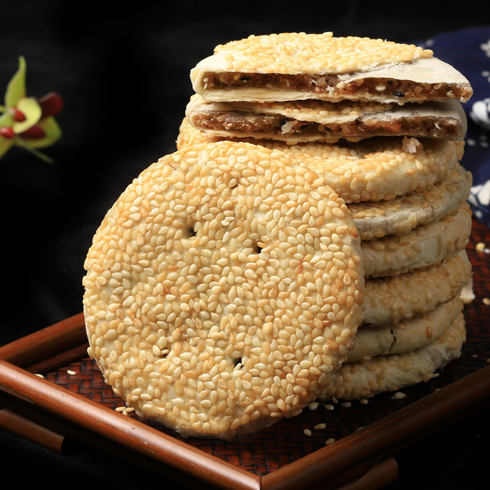

衡阳鱼粉
Fish Rice Noodles
新鲜草鱼整条现杀，鱼骨熬出奶白浓汤，细粉吸足鲜味，再撒一把朝天椒。先吃鱼、再嗦粉、后喝汤，是衡阳人雷打不动的早餐仪式，发源于衡阳县渣江。
01 / 城市名片
古称衡州，雅称“雁城”，地处南岳衡山之南，山南水北为“阳”，衡阳由此得名。
衡阳位于湖南省中南部、湘江中游，是湖南省域副中心城市，下辖 5 区 5 县、代管 2 个县级市，全市总面积 15310 平方千米，2024 年末常住人口 643.43 万。
两千二百余年的建城史里，蔡伦在此改进造纸术，石鼓书院位列中国古代四大书院，王船山著书立说，罗荣桓从这里走向开国元帅。佛道共存于南岳，书声回荡于石鼓，北雁南归入城来——山水与文脉，共同写就这座国家历史文化名城。
02 / 山水文脉
从祝融峰云海到石鼓书院江声，六张名片读懂雁城。
03 / 四时之景
春赏杜鹃、夏看云海、秋观日出、冬揽雾凇，南岳一年四副面孔。
04 / 舌尖雁城
衡阳人的一天，从一碗现杀现煮的鱼粉开始。
Fish Rice Noodles
新鲜草鱼整条现杀，鱼骨熬出奶白浓汤，细粉吸足鲜味，再撒一把朝天椒。先吃鱼、再嗦粉、后喝汤，是衡阳人雷打不动的早餐仪式，发源于衡阳县渣江。
Hengdong Country Cuisine
衡东是“中国土菜名县”，三樟黄贡椒是灵魂。衡东脆肚、石湾脆肚、新塘削肉，土钵土碗、重油重辣，2024 年衡东土菜烹饪技艺入选省级非物质文化遗产。

Sesame Flaky Mooncake
衡阳传统芝麻月饼，表层密密铺满白芝麻，桂花糖、冰糖与果仁为馅，酥薄如月、入口化渣。清末即在衡阳城区走俏，是几代雁城人的中秋记忆。
05 / 出行攻略
两条经典路线，周末短途与深度慢游各取所需。
06 / 实用工具
出发前算一笔明白账，再按清单收拾行囊。
* 门票与交通价格为 2025 年公开资料整理，仅供参考，请以景区官方当日公示为准。
勾选已备好的物品，进度自动保存在本浏览器。
已准备 0 / 8 项